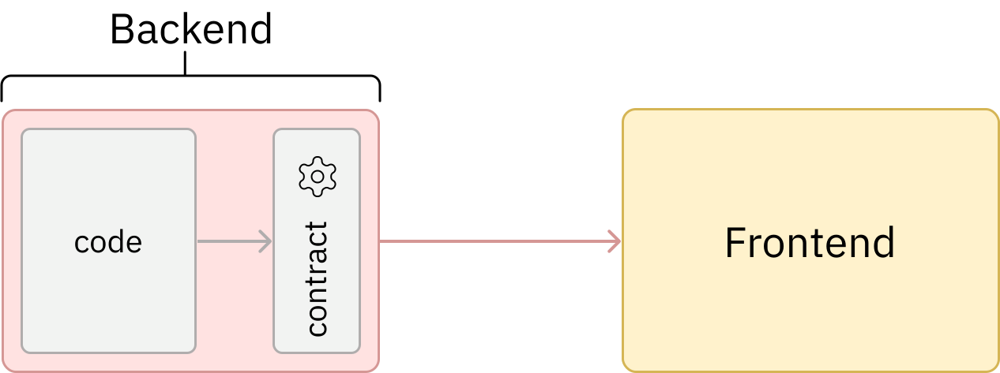
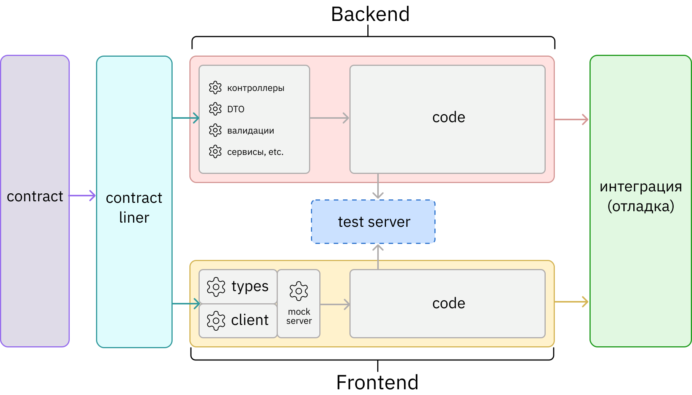
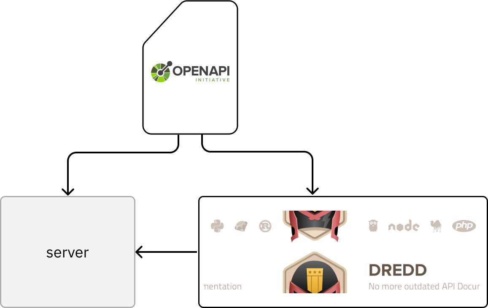

Современный
контракт
Должен быть
машиночитаемым!

Иван Поддубный, CTO Вебпрактик
Контракт — это формальное соглашение или спецификация,
которое определяет, как клиент и сервер
должны взаимодействовать между собой
Должен быть
машиночитаемым!





